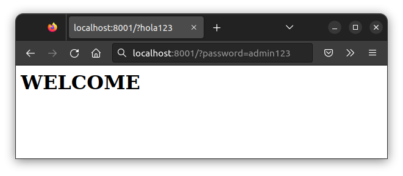
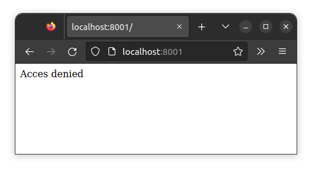
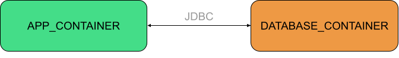
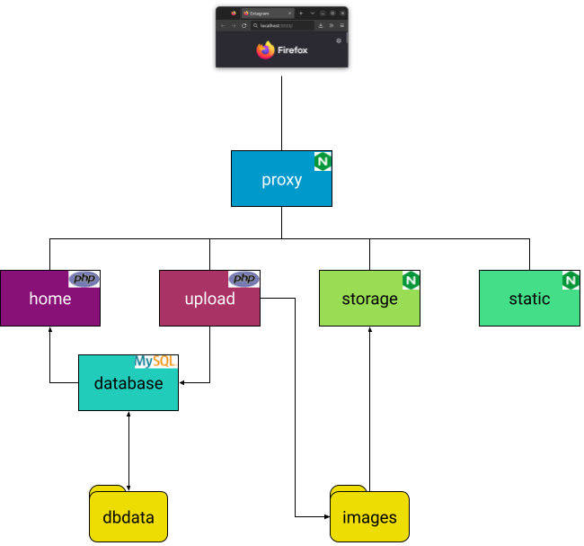

<!--meta {urls: [asix/m8/uf2], tags: [docker]}-->

<meta charset="utf-8">
<meta name="viewport" content="width=device-width, initial-scale=1">
<script src="https://cdn.jsdelivr.net/npm/clipboard@2.0.6/dist/clipboard.min.js"></script>
<script type="module" src="/sofi/js/script.js"></script>
<link rel="stylesheet" href="/sofi/css/estil.css">

<nav></nav>
<header>
    <h1>Docker Exercicis</h1>
</header>

<section>
    <work>
        <h2>1. Hello Docker</h2>

        <p>En aquest exercici s'han de generar dos imatges Docker per a executar un programa Java. A continuació es donen les
            instruccions per a compilar el codi, generar un JAR a partir del codi compilat, i executar el JAR.
        </p>
    
        <p>Arxiu de codi font:</p>
        <scfile>hellodocker/src/Main.java</scfile>
        <sc java>
            import java.util.Scanner;
            public class Main {
                public static void main(String[] args) {
                    Scanner scanner = new Scanner(System.in);
                    System.out.println("Enter your name: ");
                    String name = scanner.nextLine();
                    System.out.println("Hello " + name);
                }
            }
        </sc>
    
        <p>Compilar el codi font:</p>
        <host>hellodocker/</host>
        <shell>javac -d ./build src/Main.java</shell>
    
        <p>Generar l'arxiu <w>jar</w>:</p>
        <host>hellodocker/build/</host>
        <shell>jar cfe hellodocker.jar Main Main.class</shell>
    
        <p>Executar l'arxiu <w>jar</w>:</p>
        <host>hellodocker/build/</host>
        <shell>java -jar hellodocker.jar</shell>
    
        <p><b>a) Crea una imatge docker amb el codi font, que el compile, l'empaquete i l'execute.</b></p>

        <p>Completa el següent <w>Dockerfile</w>:</p>
    
        <scfile>hellodocker/Dockerfile</scfile>
        <sc docker>
            FROM eclipse-temurin:11
            COPY      # copiar el codi font
            WORKDIR   # canviar al directori de compilacio
            RUN       # compilar el codi
            WORKDIR   # canviar el directori de build
            RUN       # generar el jar
            CMD       # indicar la comanda a executar per els contenidors
        </sc>
    
        <p>Crea una imatge a partir del <w>Dockerfile</w>.</p>
        <p>El contenidor s'ha de llançar amb l'opció <w>-it</w> (<em>interactive</em>):</p>

        <shell>
            docker run -it <em>hellodocker-image</em>
        </shell>

        <p><b>b) Crea una imatge docker multi-stage build.</b></p>
        <p>En el primer stage s'ha de copiar el codi, compilar-lo i generar el JAR.</p>
        <p>El segon stage copiarà el JAR del primer stage, i definirà el <w>CMD</w>.</p>

        <scfile>hellodocker/Dockerfile</scfile>
        <sc docker>
            FROM eclipse-temurin:11 as builder
            COPY      # copiar el codi
            WORKDIR   # canviar el directori de compilacio
            RUN       # compilar el codi
            WORKDIR   # canviar al directori build
            RUN       # generar el jar

            FROM eclipse-temurin:11
            WORKDIR   # establir el directori d'execució
            COPY      # copiar l'arxiu jar des de l'stage anterior
            CMD       # indicar la comanda a executar per els contendiors
        </sc>

        <p><b>c) Crea un arxiu Docker Compose per a llançar un contenidor amb la imatge.</b></p>

        <p>Si la imatge no existeix, compose l'ha de generar automàticament utilitzant l'arxiu <w>Dockerfile</w> anterior.</p>
        <scfile>
            hellodocker/docker-compose.yml
        </scfile>
        <sc yaml>
            version: "3.8"

            services:
                hellodocker:
                    # especifica el directori (context) on es troba el Dockerfile
                    # especifica la imatge a utilitzar
                    stdin_open: true # docker run -i
                    tty: true        # docker run -t
        </sc>

        <p>El contenidor s'ha de llançar amb aquesta ordre:</p>
        <shell>
            docker compose run hellodocker
        </shell>
    </work>

    <work>
        <h2>2. Laberint Gradle</h2>
        <p>En aquest exercici el programa Java a depén d'una llibreria externa. Utilitzarem gradle per a descarregar la llibreria, compilar i generar el JAR.</p>

        <p>El codi font és aquest:</p>

        <scfile>laberint/app/src/main/java/Main.java</scfile>
        <sc java>
            import com.github.gerardfp.MazeGenerator;

            public class Main {
                public static void main(String[] args) {
                    System.out.println(MazeGenerator.generateMaze(30));
                }
            }
        </sc>

        <p>Com pots observar, el programa importa la llibreria externa MazeGenerator (<a href="https://github.com/gerardfp/maze-generator">https://github.com/gerardfp/maze-generator</a>).</p>

        <p>Podem utlitzar Gradle per a que descarregui automàticament la llibreria:</p>

        <scfile>laberint/app/build.gradle</scfile>
        <sc gradle>
            plugins {
                id 'java'
            }
            
            repositories {
                maven { url 'https://jitpack.io' }
            }
            
            dependencies {
                implementation 'com.github.gerardfp:maze-generator:8.0'
            }
            
            jar {
                manifest { attributes('Main-Class': 'Main') }
                from { configurations.runtimeClasspath.collect { it.isDirectory() ? it : zipTree(it) } }
            }
        </sc>

        <p>Hem afegit ademés a l'arxiu <w>build.gradle</w> les instruccions per a generar el <w>jar</w>. Aquest JAR inclourà tant el programa com la llibreria.</p>


        <p><b>a) Crea una imatge per a executar l'aplicació.</b></p>

        <p>Utilitza la imatge base <w>gradle:jdk11</w> (<a href="https://hub.docker.com/_/gradle">https://hub.docker.com/_/gradle</a>)</p>

        <scfile>laberint/Dockerfile</scfile>
        <sc docker>
            FROM      # imatge base
            COPY      # copia el codi font
            WORKDIR   /app
            RUN       gradle build
            CMD       # executa l'arxiu que ha generat gradle: /app/build/libs/app.jar
        </sc>

        <p><b>b) Crea una imatge multi-stage per a executar l'aplicació.</b></p>

    </work>

    <work>
        <h2>3. Nano tasks</h2>

        <p>El següent programa consisteix en un senzill gestor de taskes. L'aplicació permet afegir tasques i veure-les:</p>
        <shell>
            == WELCOME TO NANO TASKS ==
            1. Add task
            2. View tasks

            Select option: <in>1</in>
            Task description: <in>Comprar el pa</in>
            Task added.

            == WELCOME TO NANO TASKS ==
            1. Add task
            2. View tasks

            Select option: <in>2</in>

            Task List
            ---------
            Comprar el pa

            == WELCOME TO NANO TASKS ==
            1. Add task
            2. View tasks

            Select option:
        </shell>
        <p>Desenvoluparem l'aplicació amb una arquitectura client-servidor.</p>
        <p>Per un costat hi ha un programa que fa de servidor, i per l'altre un programa client que connecta al servidor:</p>
        <ul>
            <li><p>El servidor s'encarrega de (1) rebre del client un String i afegir-lo a un fitxer i (2) enviar al client el contingut del fitxer.</p>
            <li><p>El client s'encarrega de la interacció amb l'usuari. Li permet afegir una nova tasca, i veure les tasques afegides.</p>
    
        </ul>

        <p>Per a desenvolupar el servidor utilitza aquesta llibreria: <a href="https://github.com/gerardfp/nano-server">https://github.com/gerardfp/nano-server</a></p>
        <p>Per a desenvolupar el client utilitza aquesta: <a href="https://github.com/gerardfp/nano-client">https://github.com/gerardfp/nano-client</a></p>

        <p><b>a) Crea una imatge multi-stage de l'aplicació servidor</b></p>

        <p>Pots utilitzar aquest <w>Dockerfile</w></p>

        <sc docker>
            FROM gradle:jdk11 AS build
            COPY . /app
            WORKDIR /app
            RUN gradle build --no-daemon
            
            FROM eclipse-temurin:11
            RUN mkdir /app
            COPY --from=build /app/build/libs/*.jar /app/my-server.jar
            ENTRYPOINT ["java", "-jar","/app/my-server.jar"]
        </sc>

        <p>Posa en marxa aquesta imatge per a desenvolupar el client.</p>

        <p><b>b) Desenvolupa l'aplicació client i crea una imatge multi-stage de l'aplicació client</b></p>

        <p><b>c) Crea un Docker Compose per a posar en marxa els dos serveis (client i servidor).</b></p>

        <p>L'arxiu on guarda les tasques el servidor ha de persistir quan s'elimini el seu contenidor.</p>
    </work>

    <work>
        <h2>4. Raw Password</h2>

        <warn>
            <p>Never do this at home. Els passwords sempre s'han de passar <a href="https://auth0.com/blog/hashing-passwords-one-way-road-to-security/"><em>hashed and salted</em></a>.</p>
        </warn>

        <p>Utilitza la llibreria <a href="https://github.com/gerardfp/nano-server">https://github.com/gerardfp/nano-server</a> per a programar un servei web
        protegit amb un password.</p>

        <p>Quan es fa una petició al servei aquest ha de retornar "Welcome" si se li passa el password correcte, i "Access denied" en cas contrari.</p>

        <p>Per exemple, si el password és <w>admin123</w>:
        <ul>
            <li><p>la petició <w>http://ip.del.servidor:port/?password=admin123</w> ha de retornar "Welcome"</p>
            
            </li>
            <li><p>Qualsevol altra petició ha de retornar "Access denied"</p>
            
            </li>
        </ul>


        <p><b>a) Crea un docker-compose per a llançar l'aplicació.</b></p>

        <p>El password a utilitzar s'haurà de definir com a variable d'entorn en l'arxiu docker-compose.</p>
        <p>Per a agafar la variable d'entorn <w>PASSWORD</w> des de codi Java pots utilitzar:</p>

        <sc java>
            System.getenv("PASSWORD")
        </sc>

        <p>Per a passar el password a l'aplicació com a variable d'entorn des de l'arxiu
            docker-compose, utilitza la directiva <a href="https://docs.docker.com/compose/compose-file/compose-file-v3/#environment">environment</a>
        </p>
    </work>

    <work>
        <h2>5. Postgres Things</h2>

        <p>Aquesta aplicació Java de consola utilitza una base de dades Postgres per a emmagatzemar ...<em>coses</em></p>
        <p>Està conformada per dos serveis:</p>
        <ul>
            <li>un és la app, que interactua amb l'usuari</li>
            <li>l'altre és la base de dades, que emmagatzema les dades que obté de la app</li>
        </ul>
        

        <p>Pots obtenir el codi de l'aplicació clonant aquest repositori: <a href="https://github.com/gerardfp/postgres-things">https://github.com/gerardfp/postgres-things</a></p>

        <p><b>a) Un cop clonat el repositori, crea un arxiu <w>docker-compose.yml</w> amb les opcions per a posar en marxa la app (en mode <em>development</em>).</b></p>

        <p>A l'arxiu <w>docker-compose.yml</w> defineix dos serveis:</p>
        <ul>
            <li>El servei amb l'aplicació Java, anomenat <w>app_container</w>, amb aquestes opcions:
                <ul>
                    <li>Utilitza la imatge <w>gradle:jdk11</w>
                        <p><a href="https://docs.docker.com/compose/compose-file/compose-file-v3/#image"><icb>&#xf395;</icb> image</a></p>
                    </li>
                    <li>Posa el codi de l'aplicació (el directori <w>app</w>) al contenidor utilitzant un <em>bind-mount</em> (és a dir, muntant un <em>host path</em>). 
                        <p><a href="https://docs.docker.com/compose/compose-file/compose-file-v3/#volumes"><icb>&#xf395;</icb> volumes</a></p>
                    </li>
                    <li>Estableix el directori on s'ha muntat el codi com a directori de treball.
                        <p><a href="https://docs.docker.com/compose/compose-file/compose-file-v3/#domainname-hostname-ipc-mac_address-privileged-read_only-shm_size-stdin_open-tty-user-working_dir"><icb>&#xf395;</icb> working_dir</a></p>
                    </li>
                    <li>La comanda a executar pel contenidor és <w>gradle run -q --console=plain</w>.
                        <p><a href="https://docs.docker.com/compose/compose-file/compose-file-v3/#command"><icb>&#xf395;</icb> command</a></p>
                    </li>
                    <li>Configura el contenidor en mode <em>interactiu</em>.
                        <p><a href="https://docs.docker.com/compose/compose-file/compose-file-v3/#domainname-hostname-ipc-mac_address-privileged-read_only-shm_size-stdin_open-tty-user-working_dir"><icb>&#xf395;</icb> stdin_open</a></p>
                        <p><a href="https://docs.docker.com/compose/compose-file/compose-file-v3/#domainname-hostname-ipc-mac_address-privileged-read_only-shm_size-stdin_open-tty-user-working_dir"><icb>&#xf395;</icb> tty</a></p>
                    <li>Per últim, expressa que aquest contenidor depén del contenidor de la base de dades. 
                        És a dir, que abans d'iniciar aquest contenidor, s'inicie el contenidor de la base de dades.
                        <p><a href="https://docs.docker.com/compose/compose-file/compose-file-v3/#depends_on"><icb>&#xf395;</icb> depends_on</a></p>

                    </li>
                </ul>
            </li>
            <li>El servei amb la base de dades Postgres, anomenat <w>database_container</w>, amb aquestes opcions:
                <ul>
                    <li>Utilitza la imatge <w>postgres:latest</w>
                        <p><a href="https://docs.docker.com/compose/compose-file/compose-file-v3/#image"><icb>&#xf395;</icb> image</a></p>
                    </li>
                    <li>Defineix les variables d'entorn <w>POSTGRES_USER: gerard</w>, <w>POSTGRES_PASSWORD: gerard123</w>, i <w>POSTGRES_DB: thingsdb</w>
                        <p><a href="https://docs.docker.com/compose/compose-file/compose-file-v3/#environment"><icb>&#xf395;</icb> environment</a></p>
                    </li>
                    <li>Crea les taules de la base de dades amb l'script <w>app/init-db.sql</w>. 
                        Utilitza un <em>bind-mount</em> per a posar aquest script al directori del contenidor <w>/docker-entrypoint-initdb.d/</w>, 
                        ja que Postgres el buscarà allà.
                        <p><a href="https://docs.docker.com/compose/compose-file/compose-file-v3/#volumes"><icb>&#xf395;</icb> volumes</a></p>

                    </li>
                </ul>
            </li>
        </ul>

        <p>Posa en marxa l'aplicació amb la comanda:</p>
        <shell>
            docker compose run app_container
        </shell>

        <p><b>b) Modifica l'aplicació Java per a que afagi de les variables d'entorn l'usuari, el password i el nom de la base de dades.</b></p>
    </work>

    <work>
        <h2>6. LEMP foro</h2>

        <p><a href="https://www.digitalocean.com/community/tutorials/how-to-install-linux-apache-mysql-php-lamp-stack-on-ubuntu-20-04-es">LAMP</a> 
            és el clàssic <em>stack</em> per a aplicacions web: Linux + Apache + MySQL + PHP, 
            tot i que en els darrers anys ha sigut habitual canviar Apache per Nginx, i mod-php per <a href="https://www.php.net/manual/en/install.fpm.php">php-fpm</a>.
            Aquest stack se l'ha anomenat <a href="https://www.digitalocean.com/community/tutorials/how-to-install-linux-nginx-mysql-php-lemp-stack-on-ubuntu-20-04">LEMP</a>.</p>
        
        

        <p>
            Aquest repositori <a href="https://github.com/gerardfp/lemp-foro">https://github.com/gerardfp/lemp-foro</a> conté una aplicació LEMP que consisteix en un fòrum de 
            discussions.
        </p>

        <p><b>a) Clona el repositori i crea un arxiu <w>docker-compose.yml</w> amb les opcions per a posar en marxa la app (en mode <em>development</em>).</b></p>

        <p>A l'arxiu <w>docker-compose.yml</w> defineix tres serveis:</p>
        <ul>
            <li>El servei amb el servidor nginx, anomenat <w>proxy_container</w>, amb aquestes opcions:
                <ul>
                    <li>Utilitza la imatge <w>nginx:alpine</w>
                        <p><a href="https://docs.docker.com/compose/compose-file/compose-file-v3/#image"><icb>&#xf395;</icb> image</a></p>
                    </li>
                    <li>Mapeja <em>un</em> port del host amb el port 80 del contenidor. 
                        <p><a href="https://docs.docker.com/compose/compose-file/compose-file-v3/#ports"><icb>&#xf395;</icb> ports</a></p>
                    </li>
                    <li>Proporciona l'arxiu de configuració d'nginx. Aquest és l'arxiu <w>nginx.conf</w> i s'ha de posar a la ruta <w>/etc/nginx/conf.d/default.conf</w> del contenidor.
                        <p><a href="https://docs.docker.com/compose/compose-file/compose-file-v3/#configs"><icb>&#xf395;</icb> configs</a></p>
                    </li>
                </ul>
            </li>
            <li>El servei amp l'aplicació PHP, anomenat <w>app_container</w>:
                <ul>
                    <li>Utilitza una imatge construïda a partir de l'arxiu <w>php.Dockerfile</w>.
                        <p><a href="https://docs.docker.com/compose/compose-file/compose-file-v3/#build"><icb>&#xf395;</icb> build</a></p>
                    </li>
                    <li>Fes un <em>bind-mount</em> del codi de l'aplicació (el directori <w>app</w>) al directori <w>/var/www/html</w> del contenidor. 
                        <p><a href="https://docs.docker.com/compose/compose-file/compose-file-v3/#volumes"><icb>&#xf395;</icb> volumes</a></p>
                    </li>
                </ul>
            </li>
            <li>El servei amb la base de dades MySQL, anomenat <w>database_container</w>:
                <ul>
                    <li>Utilitza la imatge <w>mysql</w>
                        <p><a href="https://docs.docker.com/compose/compose-file/compose-file-v3/#image"><icb>&#xf395;</icb> image</a></p>
                    </li>
                    <li>Defineix les variables d'entorn <w>MYSQL_DATABASE=mydb</w>, <w>MYSQL_USER=myuser</w>, <w>MYSQL_PASSWORD=mypass123</w> i <w>MYSQL_ROOT_PASSWORD=pass123</w>
                        <p><a href="https://docs.docker.com/compose/compose-file/compose-file-v3/#environment"><icb>&#xf395;</icb> environment</a></p>
                    </li>
                    <li>Fes un <em>bind-mount</em> de l'script <w>create.sql</w> al directori <w>/docker-entrypoint-initdb.d/</w>. D'aquesta manera, es crearan les taules
                        de la base de dades quan s'inicie el contenidor per primera vegada.
                        <p><a href="https://docs.docker.com/compose/compose-file/compose-file-v3/#volumes"><icb>&#xf395;</icb> volumes</a></p>
                    </li>
                    <li>Estableix un <em>named-volume</em> al directori <w>/var/lib/mysql</w>. Així, quan les dades de la base de dades es guardaran al host, i no al contenidor.</li>
                </ul>
            </li>
        </ul>
        <p>Posa en marxa l'aplicació amb la comanda:</p>
        <shell>
            docker compose up
        </shell>
    </work>

    <work>
        <h2>7. Extagram PHP</h2>

        <p>In progress...</p>

        <p>
            <a href="https://github.com/gerardfp/extagram_php">https://github.com/gerardfp/extagram_php</a>
        </p>

        
    </work>

    <work>
        <h2>8. Svelte countries</h2>

        <p>In progress...</p>
    </work>

    <work>
        <h2>9. Python REST API</h2>

        <p>In progress...</p>
    </work>

    <work>
        <h2>10. Extagram SpringBoot</h2>

        <p>In progress...</p>
    </work>
</section>
